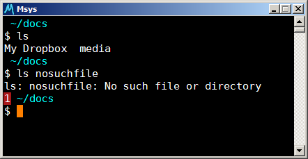

Show last command exit value in Bash shell prompt
Stick something like this in your .bashrc file:
# display red exit value if it isn't zero PROMPT_COMMAND='EXITVAL=$?; '$PROMPT_COMMAND GET_EXITVAL='$(if [[ $EXITVAL != 0 ]]; then echo -n "\[\e[37;41;01m\] $EXITVAL \[\e[0m\] "; fi)' export PS1="$GET_EXITVAL$PS1"
Command exit values other than zero are displayed in the subsequent prompt:

(see the little red '1').
It's the
${?#0}
bit which includes the last command exit value in the prompt, unless the value is zero, in which case nothing is displayed.
Comments
Comments powered by Disqus